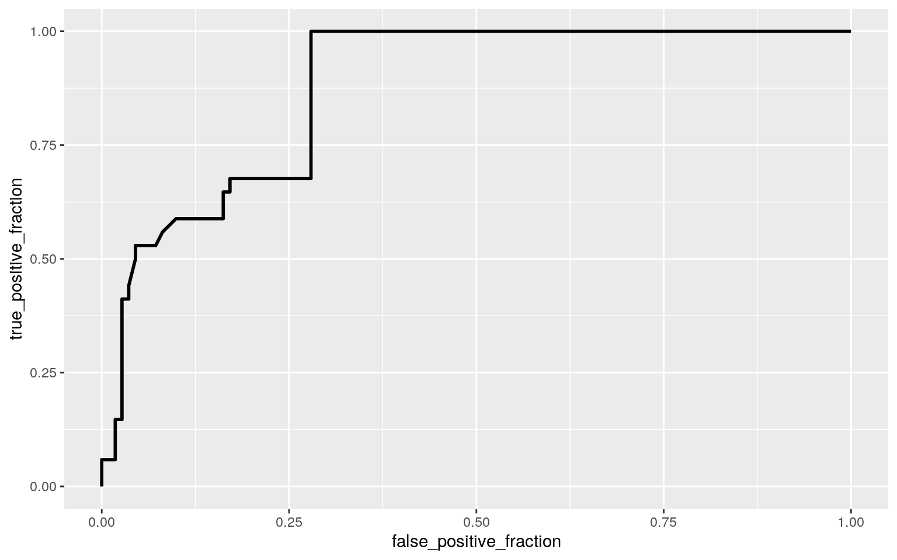

knitr::opts_chunk$set(echo = TRUE, eval = TRUE, fig.align = "center", warning = F, message = F,
tidy = TRUE, tidy.opts = list(width.cutoff = 60), R.options = list(max.print = 100))In this project, Norway, once again, shall be the focus. Here, I’ve retrieved 3 online data sets: Power Consumption, Coronavirus Pandemic Country Profile, and Mobility. The Power Consumption data set recorded hourly power consumption in megawatts (MW) for 15 European countries, and was uploaded by François Raucent on www.kaggle.com. I originally found the Coronavirus Pandemic Country Profile for Norway on https://ourworldindata.org/, and the data is also all collected on https://github.com/owid/covid-19-data/tree/master/public/data. It details daily and summary statistics regarding information about COVID-19, such as cases, deaths, and vaccination. The Mobility was displayed on https://www.covid19data.no/, and it’s also available on https://github.com/thohan88/covid19-nor-data. The data displays trends of the usage of the types of transportation collected through Apple in various regions of Norway.
For this project, I’ll be isolating the date (March 7, 2020 to July 31, 2020, minus May 11-12, 2020), power consumption (MW), the number of new COVID cases, reproduction rate (the effective reproduction number of COVID- basically a measure of its transmission or the number of new infections generated by each case), the stringency index (a composite measure of the strictness of policy responses by the government on a scale of 0 to 100), and the trend values of transit (based off of a 100 baseline, I’m assuming, since the site and Apple did not give a lot of detail on how it’s measured).
After tidying the data and removing NAs, it will bring it to a total of 145 observations. I think this is an interesting mix of data that I would hope show the intensity of COVID and how it affected Norway power consumption, policy strictness-wise, and transportation.
Western Europe Power Consumption (Five years of hourly electricity consumption of 15 European countries) - https://www.kaggle.com/francoisraucent/western-europe-power-consumption?select = no.csv
Norway: Coronavirus Pandemic Country Profile - https://ourworldindata.org/coronavirus/country/norway#what-is-the-daily-number-of-confirmed-deaths
Hannah Ritchie, Esteban Ortiz-Ospina, Diana Beltekian, Edouard Mathieu, Joe Hasell, Bobbie Macdonald, Charlie Giattino, Cameron Appel, Lucas Rodés-Guirao and Max Roser (2020) - “Coronavirus Pandemic (COVID-19)”. Published online at OurWorldInData.org. Retrieved from: ‘https://ourworldindata.org/coronavirus’ [Online Resource]
COVID-19 Data Norway: Public data about the COVID-19-situation in Norway - https://www.covid19data.no/
library(readr)
NOpower <- read_csv("no.csv", col_types = cols(load = col_number()))
NOpower <- NOpower %>% select(-end)
NOpower$start <- as.Date(NOpower$start, format = "%F")
NOpower <- aggregate(. ~ start, data = NOpower, sum) %>% rename("Date" = "start", "Load (MW)" = "load")
library(readr)
NOstats <- read_csv("owid-covid-data.csv", col_types = cols(date = col_date(format = "%m/%d/%y")))
NOstats <- NOstats %>% rename("Date" = "date") %>% filter(location %in% "Norway") %>% select(c("Date", "new_cases", "reproduction_rate", "stringency_index")) %>% mutate_at(c("new_cases"), ~replace(., is.na(.), 0))
NOdata <- NOpower %>% full_join(NOstats, by = "Date") %>% na.omit()
NOdata %>% summarize(max(`reproduction_rate`), min(`reproduction_rate`))## max(reproduction_rate) min(reproduction_rate)
## 1 3.06 0.61NOdata <- NOdata %>% mutate(Infection_intensity = case_when(`reproduction_rate`>2.243333 ~ "high", `reproduction_rate`<= 2.243333 & 1.426667<= `reproduction_rate` ~ "med", `reproduction_rate`<1.426667 ~ "low"))library(readxl)
NOmobility <- read_excel("mobility.xlsx", col_types = c("text", "text", "text", "text", "numeric", "text", "text", "numeric"))
NOmobility$date <- as.Date(NOmobility$date, format = "%F")
NOmobility <- NOmobility %>% rename("Date" = "date") %>% select(-c("geo_type", "country", "sub-region", "alternative_name")) %>% filter(region == "Norway") %>% filter(transportation_type != "walking") %>% filter(transportation_type != "driving")
NOmobility <- aggregate(val ~ Date + transportation_type, data = NOmobility, FUN = sum)
NOmobility <- NOmobility %>% rename("Transit Value" = "val", "Transportation" = "transportation_type") %>% select(-c("Transportation"))
NOdata <- NOdata %>% full_join(NOmobility, by = "Date") %>% filter(Date != "2020-05-11" & Date != "2020-05-12") %>% na.omit()
NOdata$Transit_trend <- ifelse(NOdata$`Transit Value`>100,"Increase","Decrease")
head(NOdata)## Date Load (MW) new_cases reproduction_rate
stringency_index Infection_intensity
## 1 2020-03-07 433313 39 2.93 11.11 high
## 2 2020-03-08 405005 29 2.93 11.11 high
## 3 2020-03-09 420752 29 2.99 11.11 high
## 4 2020-03-10 432851 195 3.06 14.81 high
## 5 2020-03-11 421793 198 2.91 20.37 high
## 6 2020-03-12 428652 104 2.68 40.74 high
## Transit Value Transit_trend
## 1 111.71 Increase
## 2 100.39 Increase
## 3 93.39 Decrease
## 4 88.36 Decrease
## 5 78.62 Decrease
## 6 56.74 Decrease(I don’t know why but tidying data is fun now that I know how to do it haha)
num.vars <- cbind(NOdata$`Load (MW)`, NOdata$stringency_index, NOdata$`Transit Value`, NOdata$new_cases)
man1<-manova( num.vars ~ Infection_intensity, data = NOdata)
summary(man1)## Df Pillai approx F num Df den Df Pr(>F)
## Infection_intensity 2 0.85177 25.963 8 280 < 2.2e-16 ***
## Residuals 142
## ---
## Signif. codes: 0 '***' 0.001 '**' 0.01 '*' 0.05 '.' 0.1
' ' 1summary(aov(num.vars ~ NOdata$Infection_intensity))## Response 1 :
## Df Sum Sq Mean Sq F value Pr(>F)
## NOdata$Infection_intensity 2 9.4363e+10 4.7182e+10
21.367 7.718e-09 ***
## Residuals 142 3.1355e+11 2.2081e+09
## ---
## Signif. codes: 0 '***' 0.001 '**' 0.01 '*' 0.05 '.' 0.1
' ' 1
##
## Response 2 :
## Df Sum Sq Mean Sq F value Pr(>F)
## NOdata$Infection_intensity 2 8135 4067.3 17.26 1.951e-07
***
## Residuals 142 33463 235.7
## ---
## Signif. codes: 0 '***' 0.001 '**' 0.01 '*' 0.05 '.' 0.1
' ' 1
##
## Response 3 :
## Df Sum Sq Mean Sq F value Pr(>F)
## NOdata$Infection_intensity 2 1719 859.47 1.0999 0.3357
## Residuals 142 110964 781.44
##
## Response 4 :
## Df Sum Sq Mean Sq F value Pr(>F)
## NOdata$Infection_intensity 2 86979 43489 7.1249 0.001125
**
## Residuals 142 866743 6104
## ---
## Signif. codes: 0 '***' 0.001 '**' 0.01 '*' 0.05 '.' 0.1
' ' 1pairwise.t.test(NOdata$`Load (MW)`,NOdata$Infection_intensity, p.adj = "none")##
## Pairwise comparisons using t tests with pooled SD
##
## data: NOdata$`Load (MW)` and NOdata$Infection_intensity
##
## high low
## low 9.3e-09 -
## med 0.0007 0.0048
##
## P value adjustment method: nonepairwise.t.test(NOdata$stringency_index,NOdata$Infection_intensity, p.adj = "none")##
## Pairwise comparisons using t tests with pooled SD
##
## data: NOdata$stringency_index and
NOdata$Infection_intensity
##
## high low
## low 3.1e-08 -
## med 1.9e-05 0.35
##
## P value adjustment method: nonepairwise.t.test(NOdata$new_cases,NOdata$Infection_intensity, p.adj = "none")##
## Pairwise comparisons using t tests with pooled SD
##
## data: NOdata$new_cases and NOdata$Infection_intensity
##
## high low
## low 0.0136 -
## med 0.7714 0.0028
##
## P value adjustment method: none#Overall Type I Error Rate
1-.95^14## [1] 0.512325#Bonferroni Adjustment
.05/14## [1] 0.003571429MANOVA had a p-value less than 0.05, thus there is at least one variable that has a significant mean difference. Transit Value is not significant, but the others are based on the 4 univariate ANOVAS. Using only the variables that showed a mean difference, 9 total pairwise t-tests were run. About 51.2325% of tests have a Type I error when unadjusted. The corrected threshold was 0.003571429. Using this, 6 of the 9 pairwise t-tests were significant: 3 tests for Load (MW), 2 for the stringency index, and 1 for new cases. Overall, I do think that the MONVA assumptions were largely met. I do fear, though, that because this data is taken with COVID-19 in mind, some of the variables may be too correlated.
randmeans<-vector()
randmeans2<-vector()
for(i in 1:5000){
randsamp<-sample(NOdata[NOdata$Transit_trend == "Increase",]$stringency_index,replace = T)
randmeans[i]<-mean(randsamp)
randsamp2<-sample(NOdata[NOdata$Transit_trend == "Decrease",]$stringency_index,replace = T)
randmeans2[i]<-mean(randsamp2)
}
randmeanDiff<-randmeans2-randmeans
quantile(randmeanDiff,c(.025, .975))## 2.5% 97.5%
## 17.31765 24.89957ggplot()+geom_histogram(aes(randmeanDiff))+geom_vline(xintercept = quantile(randmeanDiff,c(.025,.975)))t.test(NOdata[NOdata$Transit_trend == "Increase",]$stringency_index, NOdata[NOdata$Transit_trend == "Decrease",]$stringency_index, var.equal = F)##
## Welch Two Sample t-test
##
## data: NOdata[NOdata$Transit_trend == "Increase",
]$stringency_index and NOdata[NOdata$Transit_trend ==
"Decrease", ]$stringency_index
## t = -10.817, df = 125.54, p-value < 2.2e-16
## alternative hypothesis: true difference in means is not
equal to 0
## 95 percent confidence interval:
## -24.93551 -17.22262
## sample estimates:
## mean of x mean of y
## 38.99706 60.07613I did a randomization test on the mean difference for average stringency index for when Transit trends increased or decreased (based on th 100 value baseline). The null hypothesis was that the average stringency index was the same for when the transit trend increased or decreased. The alternative hypothesis was that the avergae of the stringency index differs between the increase or decrease of transit trends. After the randomization test, it shows that 95% of the average stringency index when transit trends increased or decreased have a mean difference between a stringency index of 17.36317 and a stringency index of 24.97875. A t-test showed the significance with the p-value of 2.2e-16.
library(lmtest)
library(sandwich)
NOdata$LoadCent <- NOdata$`Load (MW)` - mean(NOdata$`Load (MW)`, na.rm = T)
NOdata$ReproCent <- NOdata$reproduction_rate - mean(NOdata$reproduction_rate, na.rm = T)
NOdata$TransitCent <- NOdata$`Transit Value` - mean(NOdata$`Transit Value`, na.rm = T)
lin.fit<-lm(data = NOdata, stringency_index~LoadCent*ReproCent*TransitCent)
summary(lin.fit)##
## Call:
## lm(formula = stringency_index ~ LoadCent * ReproCent *
TransitCent,
## data = NOdata)
##
## Residuals:
## Min 1Q Median 3Q Max
## -10.1663 -1.9915 0.0147 2.1504 9.1956
##
## Coefficients:
## Estimate Std. Error t value Pr(>|t|)
## (Intercept) 4.976e+01 1.166e+00 42.661 < 2e-16 ***
## LoadCent 1.672e-06 1.829e-05 0.091 0.9273
## ReproCent -1.698e+01 2.470e+00 -6.875 2.01e-10 ***
## TransitCent -4.762e-01 3.255e-02 -14.629 < 2e-16 ***
## LoadCent:ReproCent 2.602e-05 3.332e-05 0.781 0.4363
## LoadCent:TransitCent -3.868e-06 6.170e-07 -6.269
4.41e-09 ***
## ReproCent:TransitCent 4.153e-01 7.644e-02 5.433 2.46e-07
***
## LoadCent:ReproCent:TransitCent -1.545e-06 7.815e-07
-1.977 0.0501 .
## ---
## Signif. codes: 0 '***' 0.001 '**' 0.01 '*' 0.05 '.' 0.1
' ' 1
##
## Residual standard error: 3.779 on 137 degrees of freedom
## Multiple R-squared: 0.953, Adjusted R-squared: 0.9506
## F-statistic: 396.6 on 7 and 137 DF, p-value: < 2.2e-16ggplot(NOdata, aes(stringency_index, reproduction_rate)) + geom_point() + geom_smooth(method = "lm")resids<-lin.fit$residuals
fitvals<-lin.fit$fitted.values
ggplot()+geom_point(aes(fitvals,resids))+geom_hline(yintercept = 0, color = 'red')shapiro.test(resids)##
## Shapiro-Wilk normality test
##
## data: resids
## W = 0.98408, p-value = 0.09194coeftest(lin.fit, vcov = vcovHC(lin.fit))##
## t test of coefficients:
##
## Estimate Std. Error t value Pr(>|t|)
## (Intercept) 4.9761e+01 1.1625e+00 42.8062 < 2.2e-16 ***
## LoadCent 1.6722e-06 2.2904e-05 0.0730 0.9419
## ReproCent -1.6983e+01 2.7672e+00 -6.1373 8.497e-09 ***
## TransitCent -4.7620e-01 3.9340e-02 -12.1047 < 2.2e-16
***
## LoadCent:ReproCent 2.6020e-05 3.7252e-05 0.6985 0.4861
## LoadCent:TransitCent -3.8683e-06 5.8789e-07 -6.5801
9.188e-10 ***
## ReproCent:TransitCent 4.1527e-01 7.8859e-02 5.2660
5.269e-07 ***
## LoadCent:ReproCent:TransitCent -1.5449e-06 1.0298e-06
-1.5002 0.1359
## ---
## Signif. codes: 0 '***' 0.001 '**' 0.01 '*' 0.05 '.' 0.1
' ' 1I wanted to see if the mean centered Load (MW), reproduction rate of COVID and the Transit value had any affect on the stringincy index. After running the linear regression and summary of the model, for every 1 megawatt increase in Load, the stringency index would increase by 1.6722e-06. For every 1 point increase in the reproduction rate, the stringency index would decrease by 1.6983e+01. For every 1 point increase in transit value, the stringency index would decrease by 4.7620e-01. For every 1 unit increase in the interaction of load and would increase the stringency index by 2.6020e-05. For every 1 unit increase in the interaction of load and transit value would decrease the stringency index by 3.8683e-06. For every 1 unit increase in the interaction of reproduction rate and transit value would decrease the stringency index by 4.1527e-01. Lastly, for every 1 unit increase in the interaction of reproduction rate, transit value, and load would decrease the stringency index by 1.5449e-06. However, LoadCent, LoadCent:ReproCent, LoadCent:ReproCent:TransitCent have p-values greater then 0.05. The model explains 95.3% of variation in the outcome. Visually, the data definitely appears sus but it does show linearity and seems homoskedastic, but normality does not fit. However, the Shapiro-Wilk normality test has a p-value of 0.09194, which is greater than 0.05. After recomputing with robust standard errors, there was no change in coefficients nor p-values.
Rerun same regression model (with the interaction), but this time compute bootstrapped standard errors (either by resampling observations or residuals). Discuss any changes you observe in SEs and p-values using these SEs compared to the original SEs and the robust SEs)
samp_distn<-replicate(5000, {
boot_dat <- sample_frac(NOdata, replace = T)
fit2 <- lm(stringency_index~LoadCent*ReproCent*TransitCent, data = boot_dat)
coef(fit2)
})
samp_distn %>% t %>% as.data.frame %>% summarize_all(sd)## (Intercept) LoadCent ReproCent TransitCent
LoadCent:ReproCent LoadCent:TransitCent
## 1 1.185783 2.197481e-05 2.827825 0.03788547 3.874023e-05
5.954521e-07
## ReproCent:TransitCent LoadCent:ReproCent:TransitCent
## 1 0.08218773 1.013627e-06summary(lin.fit)$coef[,1:2]## Estimate Std. Error
## (Intercept) 4.976108e+01 1.166435e+00
## LoadCent 1.672157e-06 1.828915e-05
## ReproCent -1.698332e+01 2.470417e+00
## TransitCent -4.761974e-01 3.255051e-02
## LoadCent:ReproCent 2.601979e-05 3.332358e-05
## LoadCent:TransitCent -3.868352e-06 6.170116e-07
## ReproCent:TransitCent 4.152711e-01 7.644149e-02
## LoadCent:ReproCent:TransitCent -1.544896e-06 7.815033e-07bptest(lin.fit)##
## studentized Breusch-Pagan test
##
## data: lin.fit
## BP = 16.075, df = 7, p-value = 0.02444While the robust and original SEs were nearly the same, the bootstrapped SEs are more different than either. The p-value that assesses for homoskedacity in the original model is was 0.02444. Because of the dissimilarity in both the original and bootstraped SEs, it is fair to assume that the p-values for the bootstrapped model won’t be close to what was calculated originally.
NOdata$Transit_trend <- as.factor(NOdata$Transit_trend)
fit3 <- glm(Transit_trend~stringency_index+reproduction_rate, data=NOdata, family= binomial(link="logit"))
exp(coef(fit3))## (Intercept) stringency_index reproduction_rate
## 2.325843e+04 8.249704e-01 1.238830e-01prob<-predict(fit3,type = "response")
class_diag<-function(probs,truth){
tab<-table(factor(probs>.5,levels=c("FALSE","TRUE")),truth)
acc=sum(diag(tab))/sum(tab)
sens=tab[2,2]/colSums(tab)[2]
spec=tab[1,1]/colSums(tab)[1]
ppv=tab[2,2]/rowSums(tab)[2]
if(is.numeric(truth)==FALSE & is.logical(truth)==FALSE) truth<-as.numeric(truth)-1
#CALCULATE EXACT AUC
ord<-order(probs, decreasing=TRUE)
probs <- probs[ord]; truth <- truth[ord]
TPR=cumsum(truth)/max(1,sum(truth))
FPR=cumsum(!truth)/max(1,sum(!truth))
dup<-c(probs[-1]>=probs[-length(probs)], FALSE)
TPR<-c(0,TPR[!dup],1); FPR<-c(0,FPR[!dup],1)
n <- length(TPR)
auc<- sum( ((TPR[-1]+TPR[-n])/2) * (FPR[-1]-FPR[-n]) )
data.frame(acc,sens,spec,ppv,auc)
}
class_diag(prob,NOdata$Transit_trend)## acc sens spec ppv auc
## Increase 0.7931034 0.5882353 0.8558559 0.5555556
0.8766561table(predict = as.numeric(prob>.5),truth = NOdata$Transit_trend)%>%addmargins## truth
## predict Decrease Increase Sum
## 0 95 14 109
## 1 16 20 36
## Sum 111 34 145NOdata$logit<-predict(fit3)
NOdata$outcome<-factor(NOdata$Transit_trend,levels = c("Increase","Decrease"))
ggplot(NOdata,aes(logit, fill = outcome))+geom_density(alpha = .3)+ geom_vline(xintercept = 0,lty = 2)library(plotROC)
ROCplot<-ggplot(NOdata)+geom_roc(aes(d = outcome,m = prob), n.cuts = 0)
ROCplot
calc_auc(ROCplot)## PANEL group AUC
## 1 1 -1 0.8766561Here, I used a logistic regression to predict the transit trend using the stringency index and reproduction rate. The exponentiated coefficients show that for every 1 point increase of the stringency index and the reproduction rate, the odds of a stroke increase by 8.249704e-01 and 1.238830e-01, respectively. After the classification diagnostics, we have an accuracy of 0.7931034, a sensitivity of 0.5882353, a specificity of 0.8558559, a precision of 0.5555556, and an AUC of 0.8766561. The ROCplot has the same AUC. I believe this shows a pretty good model of the predictability of the transit trend with the stringency index and reproduction rate since the AUC is decent.
NOdata.orig <- NOdata[,c(2:8)]
NOdata.orig$Transit_trend <- as.factor(NOdata.orig$Transit_trend)
#Logisitic Regression featuring the rest of the available predictors
fit4 <- glm(Transit_trend~., data=NOdata.orig, family= binomial(link="logit"))
prob2<-predict(fit4,type = "response")
#Classification Diagnostics
class_diag(prob2,NOdata.orig$Transit_trend)## acc sens spec ppv auc
## Increase 1 1 1 1 1#10-fold CV
k = 10
data <- NOdata.orig %>% sample_frac
folds <- ntile(1:nrow(data),n = 10)
diags<-NULL
for(i in 1:k){
train <- data[folds!= i,]
test <- data[folds == i,]
truth <- test$Transit_trend
fit5 <- glm(Transit_trend~., data = NOdata.orig, family = "binomial")
probs <- predict(fit5, newdata = test, type = "response")
diags<-rbind(diags,class_diag(probs,truth))
}
#Classification Diagnostics for 10-fold CV
summarize_all(diags,mean)## acc sens spec ppv auc
## 1 1 1 1 1 1library(glmnet)
#LASSO
y<-as.matrix(NOdata.orig$Transit_trend)
x<-model.matrix(Transit_trend~.,data = NOdata.orig)[,-1]
cv<-cv.glmnet(x,y,family = "binomial")
lasso<-glmnet(x,y,family = "binomial",lambda = cv$lambda.1se)
coef(lasso)## 8 x 1 sparse Matrix of class "dgCMatrix"
## s0
## (Intercept) -49.5779535
## `Load (MW)` .
## new_cases .
## reproduction_rate .
## stringency_index .
## Infection_intensitylow -1.2640183
## Infection_intensitymed 0.8188897
## `Transit Value` 0.5100945#10-fold CV with LASSO selected variables
k = 10
data <- NOdata.orig %>% sample_frac
folds <- ntile(1:nrow(data),n = 10)
diags<-NULL
for(i in 1:k){
train <- data[folds!= i,]
test <- data[folds == i,]
truth <- test$Transit_trend
fit5 <- glm(Transit_trend ~ `Transit Value`+ Infection_intensity , data = NOdata.orig, family = "binomial")
probs <- predict(fit5, newdata = test, type = "response")
diags<-rbind(diags,class_diag(probs,truth))
}
#Classification Diagnostics for LASSO 10-fold CV
summarize_all(diags,mean)## acc sens spec ppv auc
## 1 1 1 1 1 1Here, I am now using 6 predictors from the dataset to see if they significantly predict the transit trend. The resulting classification diagnostics had all values of 1. I’m still not sure how this happened, even after trying out with changing codes past this assignment’s due date. Performing a 10-fold CV also gives all the diagnostics a value of 1. After conducting a LASSO, the non-zero variables were the Transit Value and the infection intensity of low and medium. However, from the lasso-selected CV, all values again were 1. I’m not sure, maybe it’s due to the fact that I had to change Transit trend to a factor class, but I had to so that the logistic regression could work. But, this data was fun to work with anyways!